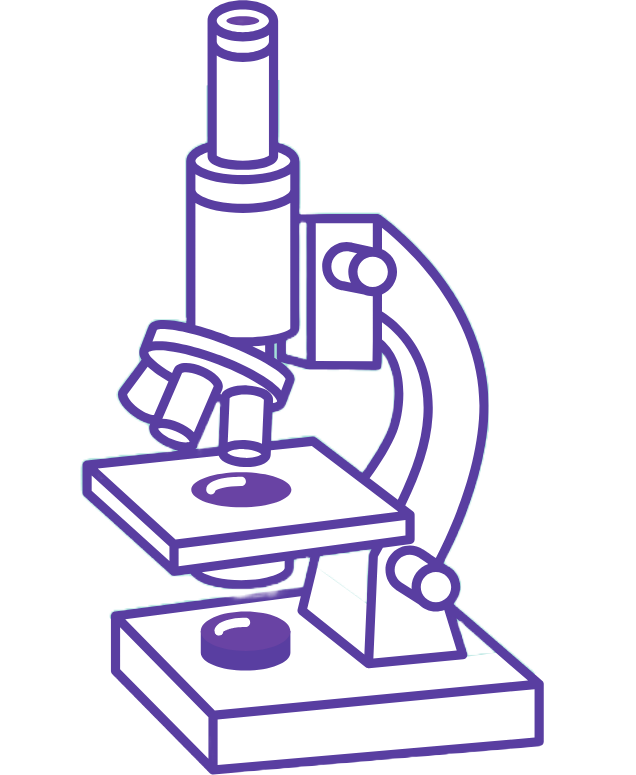

Your AI biomedical research agent and hypothesis generator
Optional if you've uploaded papers below
Publication years, Global or India based
Starts with 2020 · papers available from 2020 to 2026
Set the balance for your synthesis
Optional · up to 4 files
Once you run the pipeline, this space will become a living map of papers, comparisons, gaps, and hypothesis seeds.